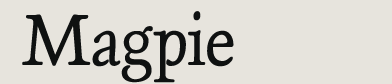
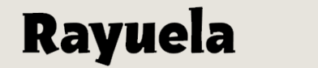

Vincent Connare (USA) web
Magpie specimen
published by Dalton Maag

Alejandro Lo Celso (Argentina) email
web
Rayuela published by Pampa Type
Thanks!
We are grateful to a lot of people for helping us all have an extraordinary year.
We would all like to thank the tutors and staff of the Department of Typography & Graphic Communication, University of Reading, especially Martin Andrews, Christopher Burke, Gerry Leonidas, James Mosley, Fiona Ross, Michael Twyman, and Gerard Unger.
We couldn’t have done it without all our families and friends, either!
Typeface designs © the respective authors, 2000–2009.
Website design and production © David Březina, 2007–2009.
The typeface used in the headline is Ronnia by TypeTogether.
Last update: 6 August 2009 — RSS feed